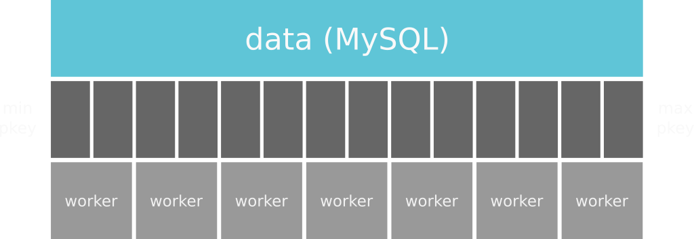
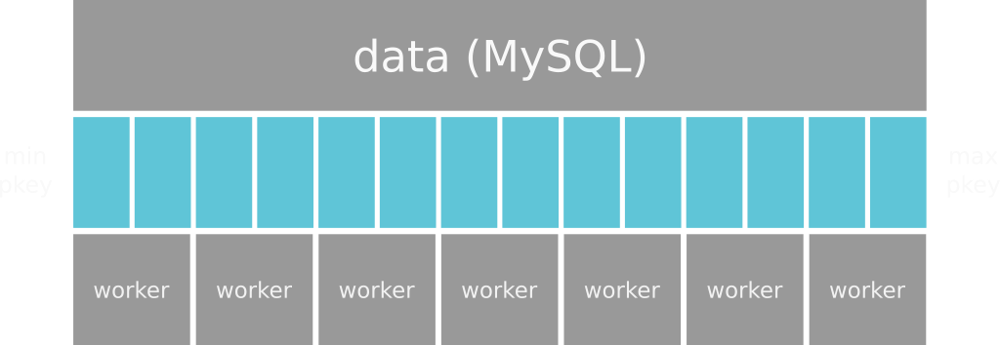
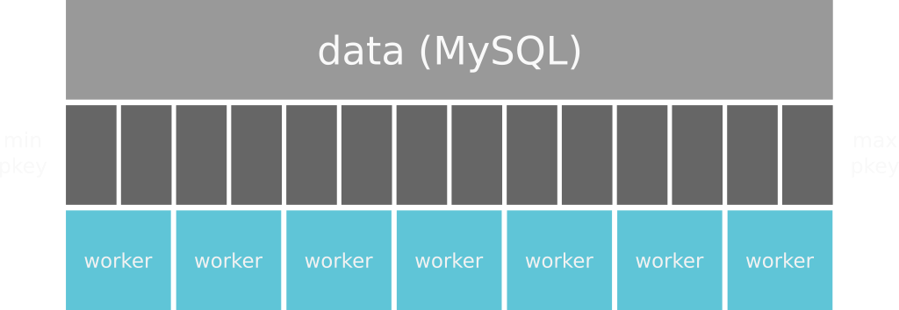
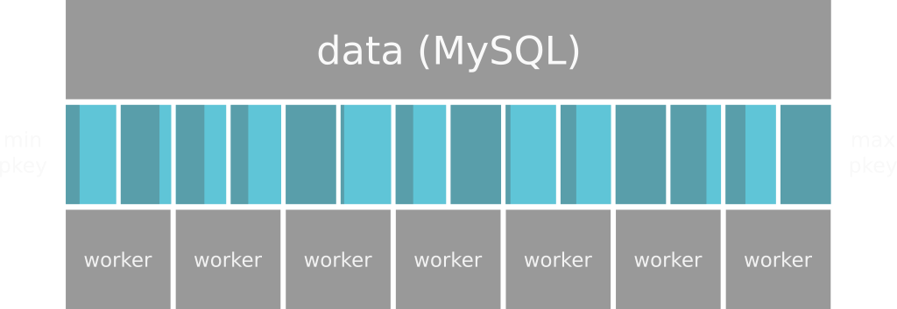

Distributed, in-memory computing for data processing
Data -> Distributed Data -> Distributed Execution -> Collect
Spark supports retrieving data from a variety of sources:
With the exception of HDFS, these data sources do not represented distributed data. Dividing data between workers is one of the most important things Spark does.
Let's look at how Spark deals with a relational database
Spark starts by looking at the maximum and minimum primary key and divides that key space into partitions.
Spark then divides the partitions among its worker nodes.
This is a bit of a simplification, since workers can have multiple executor threads. But you get the idea.
This process isn't magic!
Spark will not account for gaps in your primary key values, so the partitions might not actually be equally sized!
This is called skew.
Spark executes parallel copies of your code against each data partition...
This mapping between source data and partitions is handled by an RDD. RDDs are a low-level Spark concept.
Most people use Dataframes and Datasets instead, which are more expressive and faster*
(and when is it the worst?)
False!
Spark really comes into play when you have so much data that you can't index it.
If you can, an index will almost* always be faster.
*Compute-heavy queries may run faster on Spark, but it's still a toss-up given the lack of an index.Spark really only works well when the algorithm you're writing can easily be distributed.
Problems that don't break down into bits which can be solved in parallel are poorly suited for Spark. Code like this will run slower on Spark than it would on a single machine!
This is far less true than the Spark docs claim.
I'll explain why later this evening...
Here's one day of data from the popular NYC Taxi Dataset
$ curl -O http://assets.oculusinfo.com/salt/sample-data/taxi_one_day.csv
Or click here
Either way, remember where you put it.
We'll need the path to that file later.
Now, let's fire up a spark-shell so we have somewhere convenient to experiment
$ cd spark-1.6.1-bin-hadoop2.6/bin
$ ./spark-shell \
--master local[2] \
--packages com.databricks:spark-csv_2.10:1.4.0
--master local[2]
--packages com.databricks:spark-csv_2.10:1.4.0
com.databricks:spark-csv_2.10:1.4.0
At this point, you should have a spark prompt:
...
Welcome to
____ __
/ __/__ ___ _____/ /__
_\ \/ _ \/ _ `/ __/ '_/
/___/ .__/\_,_/_/ /_/\_\ version 1.6.1
/_/
Using Scala version 2.10.5 (Java HotSpot(TM) 64-Bit Server VM, Java 1.8.0_77)
Type in expressions to have them evaluated.
Type :help for more information.
Spark context available as sc.
16/03/28 18:28:21 WARN Connection: BoneCP specified but not present in CLASSPATH (or one of dependencies)
16/03/28 18:28:21 WARN Connection: BoneCP specified but not present in CLASSPATH (or one of dependencies)
16/03/28 18:28:28 WARN ObjectStore: Version information not found in metastore. hive.metastore.schema.verification is not enabled so recording the schema version 1.2.0
16/03/28 18:28:29 WARN ObjectStore: Failed to get database default, returning NoSuchObjectException
16/03/28 18:28:32 WARN Connection: BoneCP specified but not present in CLASSPATH (or one of dependencies)
16/03/28 18:28:32 WARN Connection: BoneCP specified but not present in CLASSPATH (or one of dependencies)
SQL context available as sqlContext.
scala>
TODO: explain code advantages of SQL API. Simple for previous SQL users.
TODO: explain Tungsten briefly. This is the future of Spark.